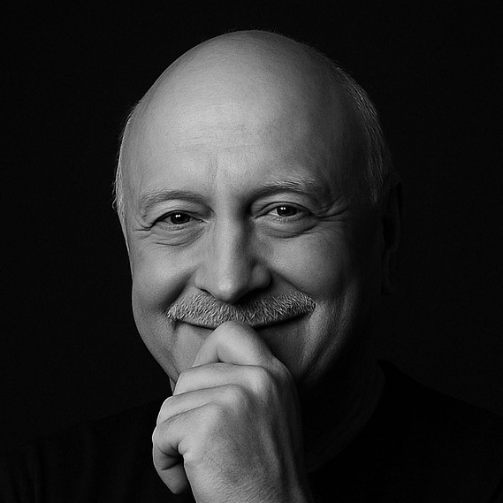

ONE MIND • MANY UNIVERSES
Ankur Gupta
Thinker • Creator • Builder
"Ideas that move minds.
Outcomes that move markets.
Since 1980."
Outcomes that move markets.
Since 1980."
Personal ventures launching soon